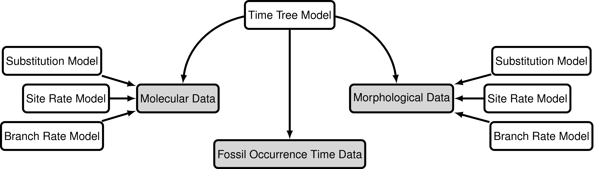
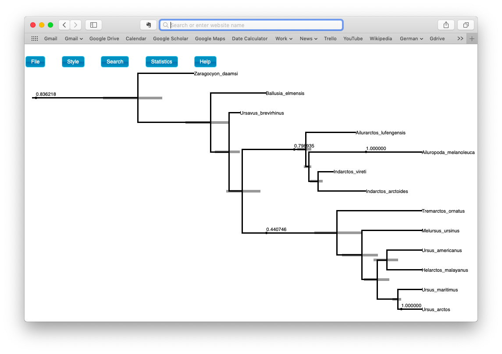

Exercise 5
In exercise 4 we inferred the phylogeny of extant bears and a timeline for their evolution using the fossized birth-death range process. This tree model explictly incorporates the fossil recovery process, meaning we can directly include extinct samples as part of the tree. Using this model we can take advantage of fossils with and without character data. This is because the fossil sampling times are informative about the FBD model parameters and speciation times, even if their phylogenetic position remains unknown or unresolved. In the previous exercise, we didn’t include any character data for our extinct samples, so we could not infer their phylogenetic relationship and pruned the fossils from the output. In this exercise we will infer the phylogeny of extant and fossil bear species by including morphological character data in our analysis, which is available for both extant and extinct species, in addition to the molecular data, which is available for living species only. This approach to dating can be referred to as tip-dating, combined-evidence or total-evidence dating (Ronquist et al. 2012; Zhang et al. 2016; Gavryushkina et al. 2016) (although it does not technically use all the evidence we could potentially incorporate into our dating analyses).

The data
The data used in this exercise will still include the molecular data used in the previous exercises (bears_cytb.nex). We will also use the same substitution and clock models (the GTR + $\Gamma$ model and the uncorrelated exponential relaxed clock model).
For this exercise we’ll also use a matrix of 62 discrete, binary (coded “0” or “1”) morphological characters for 18 species of fossil and extant bears. bears_cytb.nex contains the matrix in NEXUS format. We’ll analyse this data using the Mk + v model.
Again, we’ll take advantage of all the stratigraphic age information in bears_taxa.tsv and use the fossized birth-death range process as our tree model. Note that there are two fossil species not included in our character matrix – these are still valuable to include in our analysis but we will prune these taxa from the output trees.
To complete this exercise, we need to create a script for the substitution and clock model that will be applied to the morphological character data. We’ll also need to make some small changes to the master and the tree model scripts.
The master Rev script
Again, we’ll start by making some changes to the master Rev script.
Copy the master script from the previous exercise and call it MCMC_dating_ex5.Rev.
Write the commands to read the morphological character data and add missing character data (i.e. for the two species for which character data is unvailable).
morpho <- readDiscreteCharacterData("data/bears_morphology.nex")
morpho.addMissingTaxa( taxa )
Now you will have two character partitions, each with missing data for differing number of taxa.
The tree model
Creating a copy of your tree_FBD.Rev script, call it tree_TEFBD.Rev and open it in your text editor.
Monitoring parameters of interest using deterministic nodes
The only change we need to make in this file is to fnPruneTree There are two fossil species for which we do not have any morphological characters Parictis montanus and Ursus abstrusus, so we will not be able to resolve their tolopological position and we should keep them pruned from the tree. We do not want to remove the other species this time because we are interested in there topological placement.
pruned_tree := fnPruneTree(timetree, prune=v("Parictis_montanus","Ursus_abstrusus"))
The morphological clock model
We will apply a simple global clock model to our morphological partition.
Copy the script for the global clock model clock_global.Rev and call it clock_morpho.Rev. Open it in your text editor.
For the branch-rates parameter we will also use an exponential prior, with parameters rate = 10. The expected value (or mean) of this distribution is 0.1. The same branch-rate will apply to every branch in the tree.
Simply change the name of branch_rates to branch_rates_morpho.
branch_rates_morpho ~ dnExponential(10.0)
moves.append( mvScale(branch_rates_morpho,lambda=0.5,tune=true,weight=5.0) )
The Mk model
The next step is to specify the model that describes how morphological characters evolve along the tree and across sites. You can find a full description about the Mk model in the Discrete morphology - Tree Inference Tutorial.
Create a script called sub_Mk.Rev and open it in your text editor.
The Mk model is a generalization of the Jukes-Cantor model, so we will initialize our Q matrix from a Jukes-Cantor matrix.
Q_morpho := fnJC(2)
As we did for our molecular data partition, we will allow gamma-distributed rate heterogeneity among sites.
alpha_morpho ~ dnUniform( 0.0, 1E8 )
rates_morpho := fnDiscretizeGamma( alpha_morpho, alpha_morpho, 4 )
moves.append( mvScale(alpha_morpho, lambda=0.5, tune=true, weight=5.0) )
Finally, we can create the phylogenetic continuous time Markov chain (PhyloCTMC) distribution for our sequence data, including the gamma-distributed site rate categories, as well as the branch rates defined as part of our clock model. We set the value of this distribution equal to our observed data and identify it as a static part of the likelihood using the clamp method.
As we did previously for our molecular data partition, we now combine our data and our model in the phylogenetic CTMC distribution. There are some unique aspects to doing this for morphology.
You will notice that we have an option called coding. This option allows us to condition on biases in the way the morphological data were collected (ascertainment bias). The option coding=variable specifies that we should correct for coding only variable characters.
phyMorpho ~ dnPhyloCTMC(tree=timetree, siteRates=rates_morpho, branchRates=branch_rates_morpho, Q=Q_morpho, type="Standard", coding="variable")
phyMorpho.clamp(morpho)
Back to the master Rev script
As before, change the file used to specify the tree model from tree_FBD.Rev to tree_TEFBD.Rev.
source("scripts/tree_TEFBD.Rev")
Second, use the source function to load in the new model scripts you wrote as part of this exercise for the analysis of morphological.
source("scripts/clock_morpho.Rev") # the morphological clock model
source("scripts/sub_Mk.Rev") # the Mk model
Finally, update the name of the output files.
monitors.append( mnModel(filename="output/bears_TEFBD.log", printgen=10) )
monitors.append( mnFile(filename="output/bears_TEFBD.trees", printgen=10, pruned_tree) )
Don’t forget to update the commands used to generate the summary tree.
trace = readTreeTrace("output/bears_TEFBD.trees")
mccTree(trace, file="output/bears_TEFBD.mcc.tre" )
Run your MCMC analysis!
Examining the output
Let’s examine the output in Tracer.
Open the program Tracer and load the log files bears_FBD.log and bears_TEFBD.log.
Let’s compare the results we obtained using the FBD and TEFBD analysis. Start by examining the estimates for the MRCA of extant bears.

Do you observe any important differences for any other parameters?
Sampled ancestor trees
When there are sampled ancestors present in the tree, visualizing the tree can be fairly difficult in traditional tree viewers. We will make use of a browser-based tree viewer called IcyTree, created by Tim Vaughan. IcyTree has many unique options for visualizing phylogenetic trees and can produce publication-quality vector image files (i.e. SVG). Additionally, it correctly represents sampled ancestors on the tree as nodes, each with only one descendant.
Navigate to https://icytree.org/ and open the file bears.mcc.tre in IcyTree.
Try to replicate the tree shown in the figure below. (Hint: Style > Mark Singletons).

Examine the posterior probabilities and ages for the sampled ancestors and node ages.
Next
Hooray! You’ve reached the end of the tutorial!
For further options and information about the tree model used in this exercise see Tracy Heath, April Wright and Walker Pett’s tutorial Combined-Evidence Analysis and the Fossilized Birth-Death Process for Stratigraphic Range Data.
For further information about morphological models of character evolution see April Wright, Michael Landis and Sebastian Höhna’s tutorial Discrete morphology - Tree Inference.
- Gavryushkina A., Heath T.A., Ksepka D.T., Stadler T., Welch D., Drummond A.J. 2016. Bayesian Total-Evidence Dating Reveals the Recent Crown Radiation of Penguins. Systematic Biology. 10.1093/sysbio/syw060
- Ronquist F., Klopfstein S., Vilhelmsen L., Schulmeister S., Murray D.L., Rasnitsyn A.P. 2012. A total-evidence approach to dating with fossils, applied to the early radiation of the Hymenoptera. Systematic Biology. 61:973–999.
- Zhang C., Stadler T., Klopfstein S., Heath T.A., Ronquist F. 2016. Total-Evidence Dating under the Fossilized Birth-Death Process. Systematic Biology. 65:228–249. 10.1093/sysbio/syv080